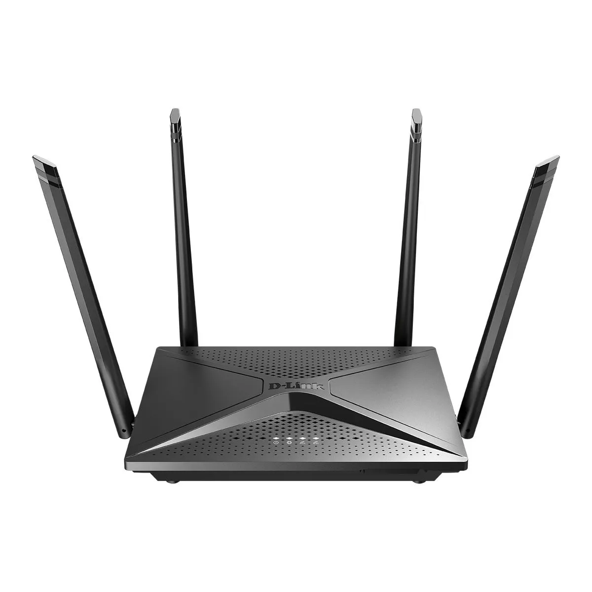

Switch
é um equipamento que permite a comunicação entre dispositivos de uma rede, como computadores, impressoras, servidores e roteadores
Funcionamento do Switch
O switch recebe pacotes de dados enviados por um dispositivo, Ele verifica se o endereço MAC de destino é válido, Ele verifica se a informação pode ser transmitida e Ele encaminha os dados pelas portas apropriadas ao destino correto
Tipos de Switch
Switches simples conectam dispositivos em uma única rede local (LAN)
Switches mais avançados podem conectar dispositivos de várias LANs
Switches gerenciáveis permitem o monitoramento de tráfego, definição de prioridades e criação de VLANs
Switches não gerenciáveis são mais simples de instalar e sem configurações avançadas
Fotos do Switch e Esquematicos


Hub
O Hub é um dispositivo de rede simples que também conecta vários dispositivos em uma rede local. Ao contrário do switch, o hub transmite os pacotes de dados para todos os dispositivos conectados a ele, o que pode causar congestionamento e colisões de dados, já que não há direcionamento inteligente para o dispositivo de destino.
Funcionamento do Hub
O hub é um dispositivo simples que conecta vários dispositivos em uma rede local (LAN). Ele transmite os dados recebidos para todos os dispositivos, sem distinguir o destinatário.
Tipos de Hub
Hub passivo: Não possui fonte de alimentação e transmite dados sem amplificação.
Hub ativo: Possui amplificação de sinal e pode regenerar o sinal antes de transmiti-lo.
Hub inteligente: Permite a monitorização e configurações avançadas, mas ainda é limitado em comparação com um switch.


Roteador
O Roteador é um dispositivo que conecta diferentes redes entre si, como uma rede doméstica à internet. Ele encaminha os pacotes de dados entre essas redes, utilizando informações como o endereço IP para determinar a melhor rota para enviar os dados. O roteador também pode oferecer funções de segurança, como firewalls.
Funcionamento do Roteador
O roteador é um dispositivo que conecta diferentes redes, como uma LAN à internet, e gerencia o tráfego de dados entre elas. Ele utiliza endereços IP para encaminhar pacotes de dados.
Funções do Roteador
Encaminhamento de pacotes entre diferentes redes.
Definição de regras de firewall para segurança da rede.
Distribuição de endereços IP para dispositivos na rede local (via DHCP).
Modem
O Modem (modulador-demodulador) é o equipamento responsável pela conexão à internet. Ele converte os sinais digitais enviados pelos dispositivos em sinais analógicos que podem ser transmitidos através de linhas telefônicas ou cabos coaxiais, e vice-versa, para garantir a comunicação com a rede externa.
Funcionamento do Modem
O modem (modulador-demodulador) é responsável por converter os sinais digitais dos dispositivos em sinais analógicos que podem ser transmitidos através de linhas telefônicas ou coaxiais, e vice-versa.
Tipos de Modem
Modem ADSL: Conecta-se à linha telefônica e oferece acesso à internet via par metálico.
Modem a cabo: Conecta-se a uma rede de TV a cabo para fornecer acesso à internet.
Modem fibra óptica: Utiliza a fibra óptica para oferecer altas velocidades de conexão à internet.

Repetidor
O Repetidor é um dispositivo que amplifica ou repete sinais de rede, aumentando o alcance da comunicação em uma rede. Ele é utilizado em ambientes onde o sinal da rede precisa ser estendido, como em grandes áreas ou edifícios, para garantir que a comunicação não seja interrompida.
Funcionamento do Repetidor
O repetidor é um dispositivo que amplifica o sinal de rede, estendendo o alcance da conexão entre dispositivos. Ele é útil para superar limitações de distância ou obstáculos na rede.
Função do Repetidor
Reforça o sinal da rede para permitir que os dados cheguem a distâncias maiores.
Pode ser usado tanto em redes Wi-Fi quanto em redes cabeadas.
Bridge
A Bridge é um dispositivo que conecta duas ou mais redes locais (LANs) separadas, permitindo que se comuniquem entre si. Ela opera na camada de enlace de dados (camada 2) e pode ser usada para dividir uma rede grande em segmentos menores, melhorando a eficiência e a segurança.
Funcionamento da Bridge (Ponte)
A bridge é um dispositivo que conecta duas ou mais redes locais, funcionando como um filtro entre elas para garantir que apenas os dados relevantes sejam transmitidos entre as redes.
Funções da Bridge
Reduz a colisão de pacotes ao dividir grandes redes em segmentos menores.
Aumenta a eficiência da rede ao filtrar pacotes desnecessários entre diferentes segmentos.
Conecta redes com diferentes tecnologias, como Ethernet e Wi-Fi.